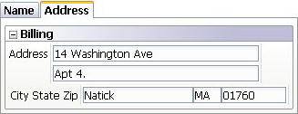

Layout Controls
Property name: 'Insert Layout Command...' (Grid->Fields' pane)
The layout commands for 'stacked' layouts like columnar have a number of new features.
-
Modern style tabs
-
Frames - classic and modern. Modern frames can have collapse/expand button
-
Containers - A section inside of another section that can have its own formatting
|  |
|
Modern style tabs, modern frame with collapse/expand and city state zip fields in a container. |